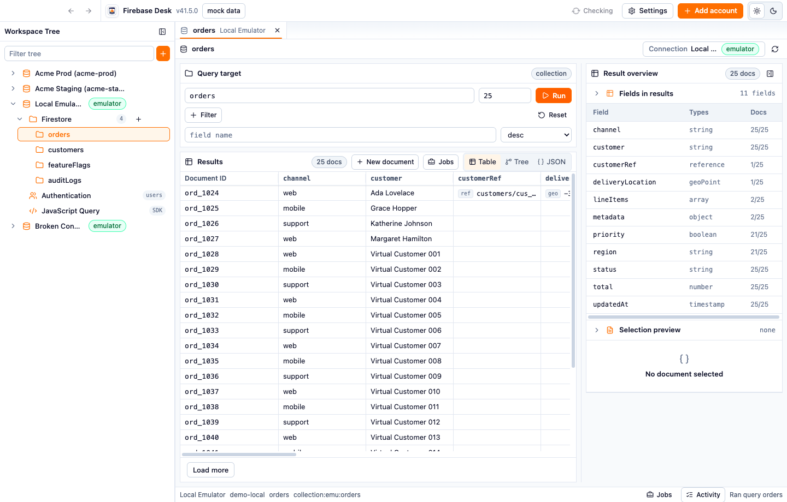

Try first in mock mode
First launch uses local demo data, so you can learn the app before connecting a project.
Browse and edit Firestore data, inspect Authentication users, connect local emulators, and run JavaScript admin scripts from a focused desktop app.

First launch uses local demo data, so you can learn the app before connecting a project.
Build queries, inspect table/tree/JSON results, edit fields, handle conflicts, and run collection jobs.
Search users, inspect profile data, and review or edit custom claims where supported.
Run trusted admin scripts and inspect returned values, yielded results, logs, and errors.
Add local Firebase Emulator profiles and keep target mode visible in the app shell.
Production writes are available, but destructive operations require clear user actions.
The feature inventory covers the full app, with screenshots captured from real mock-mode runs.